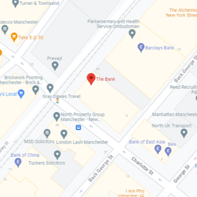
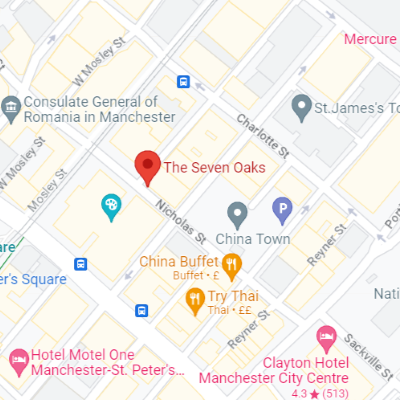

Pubs
Step into Manchester's pub culture, where historic establishments meet contemporary vibes. Savor a pint of locally brewed ale, immerse yourself in lively conversations, and create unforgettable memories in the heart of the city. With around 416 pubs in the City Centre and the oldest dating back to 1552, there are plently to choose from!

The Bank
Located between Market Street and St Peters Square Tram Stops. The Bank is a traditional pub known for its quality food and eclectic range of real ales. Originally a Library, this building is rich in History and retains many of it’s original features. The Bank is a great place to grab a few drinks with friends and order one of the food bargains they have on. Sandwich, Fries and a Pint for £7.50? Yes please!
Deal
- Bar Snacks 3 for £14, 5 for £20
- Sandwich & a Drink from £7.50
- Pie & a Drink from £12.50
CM Rating
*
Hours
12pm-11pm Weekdays; 10am-11pm Saturdays; 11am-9pm Sundays
Location
57 Mosley St, Greater, Manchester M2 3FF

Mulligans
Mulligans is a vibrant Irish bar in the heart of Manchester that offers a lively atmosphere with live music, quiz nights! If you love a pint of Guinness Mulligans Is the perfect place for you as it’s renowned for having the best pint of Guinness in Manchester. The pub shows a whole host of Live sport too!
Deal
Pint of guiness for only £4!
CM Rating
****
Hours
12:00-23:00 Mon-Wed; 12:00-1:00am Thurs-Sun
Location
12 Southgate, Manchester M3 2RB


Seven Oaks
The Seven Oaks pub, in the heart of Manchester's Chinatown, is the perfect English pub. Offering 7 screens for sporting events, a wide range of graught and cask ales, comedy nights, open mic nights and a jukebox! This pub has it all!
Deal
Only £2.50 for cask ales!
CM Rating
****
Hours
12am-23:00pm everyday
Location
5 Nicholas St, Manchester M1 4HL
